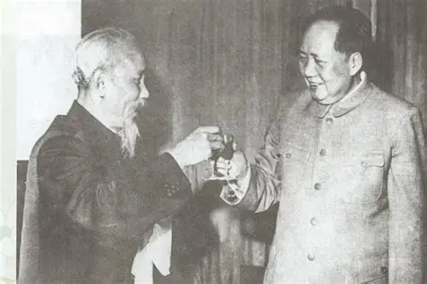
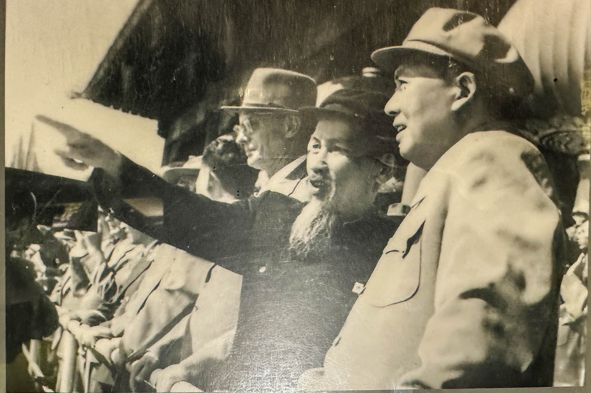
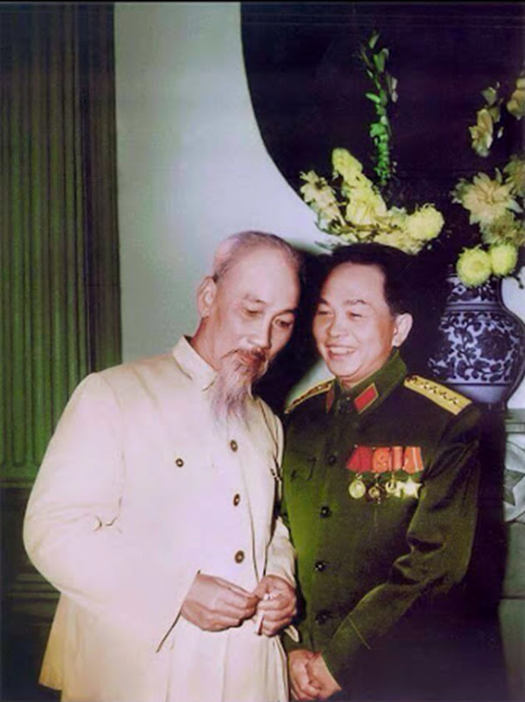

Tư tưởng Hồ Chí Minh là sự kết hợp giữa chủ nghĩa yêu nước truyền thống với tinh hoa văn hoá nhân loại, đặc biệt là chủ nghĩa Mác – Lênin. Đó là hệ thống quan điểm toàn diện, sâu sắc về con đường giải phóng dân tộc, xây dựng đất nước và phát triển con người.
Người khẳng định: “Không có gì quý hơn độc lập, tự do.” Và độc lập phải gắn liền với hạnh phúc của nhân dân – “Nếu nước độc lập mà dân không được hưởng hạnh phúc, tự do, thì độc lập cũng chẳng có nghĩa lý gì.”
Đạo đức của Bác là sự kết tinh giữa lòng nhân ái, vị tha, cần – kiệm – liêm – chính – chí công vô tư. Cả cuộc đời Người là minh chứng cho lối sống giản dị, thanh cao nhưng giàu tình thương và trách nhiệm.
“Tôi chỉ có một ham muốn, ham muốn tột bậc, là làm sao cho nước ta được hoàn toàn độc lập, dân ta được hoàn toàn tự do, ai cũng có cơm ăn áo mặc, ai cũng được học hành.”
Những lời nói và hành động giản dị của Người đã cảm hóa hàng triệu trái tim, trở thành chuẩn mực đạo đức cho các thế hệ Việt Nam noi theo.
Phong cách của Bác Hồ là sự hòa quyện hài hòa giữa truyền thống dân tộc và tinh hoa văn hóa nhân loại: trong lời nói, trong việc làm, trong cách ứng xử, giao tiếp và lãnh đạo.
Người giản dị từ cách ăn mặc, ở, làm việc – nhưng vẫn toát lên vẻ đẹp của một nhân cách lớn, hiện đại, tự tin và sâu sắc.
“Người ta ai cũng có chỗ hay, chỗ dở. Ta phải học cái hay của người, để giúp mình tiến bộ hơn.”
Chủ tịch Hồ Chí Minh luôn dành tình yêu thương đặc biệt cho thanh thiếu niên, nhi đồng. Người coi thế hệ trẻ là chủ nhân tương lai của nước nhà, là lực lượng kế tục sự nghiệp cách mạng.
Bác căn dặn: “Non sông Việt Nam có trở nên tươi đẹp hay không, dân tộc Việt Nam có bước tới đài vinh quang để sánh vai với các cường quốc năm châu hay không, chính là nhờ một phần lớn ở công học tập của các em.”
Tư tưởng “trồng người” của Bác là di sản quý giá, vẫn soi sáng con đường giáo dục Việt Nam hiện nay.
Ngày nay, tư tưởng, đạo đức và phong cách Hồ Chí Minh tiếp tục là nền tảng tinh thần vững chắc của dân tộc. Hình ảnh của Người không chỉ là niềm tự hào của Việt Nam, mà còn là biểu tượng của hòa bình, tự do và nhân ái trên thế giới.
“Tên tuổi của Chủ tịch Hồ Chí Minh sẽ sống mãi trong lòng nhân loại như một biểu tượng của độc lập dân tộc và khát vọng hòa bình.” — Fidel Castro